직업상담사-2급(구) (2007-08-05 기출문제)
1과목: 직업상담ㆍ심리학
1. 상담면접에서 상담자의 질문요령으로 적합한 것은?
- 질문은 가능한 한 개방적 형태를 띠어야 한다.
- ‘예’ 혹은 ‘아니오’의 단답식 답변을 이끌어 낼 수 있어야 한다.
- 한꺼번에 많은 정보를 얻기 위해서 상담자는 질문 공세를 펴야 한다.
- 내담자를 충분히 이해하기 위해서는 ‘왜’ 라는 질문을 자주 던져야 한다.
(정답률: 알수없음)

2. 다음 초기상담과정의 상담내용을 읽고 이 상담전략을 올바르게 평가한 것은?
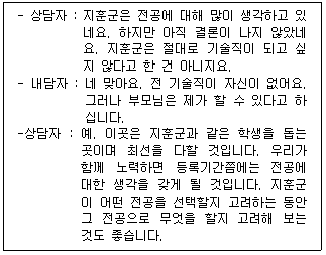
- 상담자와 내담자는 초기목표를 설정하여야 한다.
- 상담자는 상담에서 기대를 설정하고 나서 은연중에 내담자에게 목표추구에 대한 영향을 미치려고 하므로 적절하지 않다.
- 내담자와 상담자간의 역할이 논의되어야 한다.
- 이 상담은 내담자의 기대가 일치하므로 등록 마감 전까지 상담회기를 끝낼 수 있다.
(정답률: 알수없음)
3. 생애진로사정에 대한 설명으로 틀린 것은?
- 생애진로사정은 검사실시나 검사해석의 예비적 단계를 끝내고 실시하는 단계이다.
- 구조화된 면담기술로서 비교적 짧은 시간 내에 내담자에 대한 정보를 수집하는 단계이다.
- 내담자가 하는 일의 유형이나 내담자의 정보를 처리하고 의사결정을 돕는 방법을 모색할 수 있는 단계이다.
- 직업상담의 주제와 관심을 표면화하는데 덜 위협적인 방법의 단계이다.
(정답률: 알수없음)
4. 파슨스(Parsons)가 제안한 특성-요인이론의 핵심적인 세 가지 요소에 포함되지 않는 것은?
- 내담자 특성의 객관적인 분석
- 직업세계의 분석
- 과학적 조언을 통한 매칭(matching)
- 주변 환경의 분석
(정답률: 알수없음)
5. 직업상담의 문제 유형 중 보딘(Bordin)의 분류에 해당하지 않는 것은?
- 의존성
- 확신의 결여
- 선택에 대한 불안
- 흥미와 적성의 모순
(정답률: 알수없음)
6. 다음은 어떤 상담이론에 관한 설명인가?
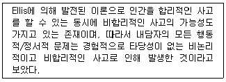
- 인지적-정서적 상담
- 교류분석적 상담
- 형태주의 상담
- 정신분석적 상담
(정답률: 알수없음)
7. 내담자의 행동과 정보를 수집하고 이해하며 상담하는 기법에 대한 설명으로 틀린 것은?
- 의미 있는 질문은 언제든지 반응하도록 범위를 열어 놓는 것이다.
- 전이된 오류 정정하기는 정보의 오류, 한계의 오류, 논리적 오류 등으로 구별된다.
- 근거 없는 믿음 확인하기는 내담자의 결론도출, 재능, 지각, 지적 및 정보의 부적절하거나 부분적인 일반화, 관념 등 정보의 일부분만을 보는 것이다.
- 변명에 초점 맞추기는 자신의 행동에 부정적인 면을 줄이려는 행동이나 설명으로서 자신의 긍정적인 면을 계속 유지하려는 것이다.
(정답률: 알수없음)
8. 직업상담의 목적으로 옳지 않은 것은?
- 내담자가 이미 잠정적으로 선택한 진로결정을 확고하게 해주는 것이다.
- 개인의 직업목표를 명백히 해주는 과정이다.
- 내담자가 자기 자신과 직업세계에 대해 알지 못했던 사실을 발견하도록 도와주는 것이다.
- 내담자가 최대한 고소득 직업을 선택하도록 돕는 것이다.
(정답률: 알수없음)
9. 체계적 둔감화(systematic desensitization)의 기초가 되는 학습 원리는?
- 혐오 조건형성
- 고전적 조건형성
- 조작적 조건형성
- 고차적 조건형성
(정답률: 알수없음)
10. 내담자 중심상담 이론에 관한 설명으로 틀린 것은?
- Rogers의 상담경험에 비롯된 이론이다.
- 상담의 기본목표는 개인이 일관된 자아개념을 가지고 자신의 기능을 최대로 발휘하는 사람이 되도록 도울 수 있는 환경을 제공하는 일이다.
- 특정기법을 사용하기 보다는 내담자와 상담자 간의 안전하고 허용적인 ‘나와 너’의 관계를 중시한다.
- 상담기법으로 적극적 경청, 감정의 반영, 명료화, 공감적 이해, 내담자 정보탐색, 조언, 설득, 가르치기 등이 이용된다.
(정답률: 알수없음)
11. Brayfield의 직업정보 세 가지 기능에 해당하지 않는 것은?
- 정보적 기능
- 재조정 기능
- 동기화 기능
- 평가적 기능
(정답률: 알수없음)
12. 다음 중 생애진로사정의 구조에 포함되지 않는 것은/
- 진로사정
- 강점과 장애
- 훈련 및 평가
- 전형적인 하루
(정답률: 알수없음)
13. 정신분석적 상담에서 내적 위험으로부터 아이를 보호하고 안정시켜주는 어머니의 역할처럼, 내담자가 막연하게 느끼지만 스스로는 직면할 수 없는 불안과 두려움에 대해 상담자의 이해를 적절한 순간에 적합한 방법으로 전해주면서 내담자에게 의지가 되어주고 따뜻한 배려로 마음을 녹여주는 활동은?
- 버텨주기
- 역전이
- 현실검증
- 해석
(정답률: 알수없음)
14. 직업상담시 내담자의 가족이나 선조들(부모, 조부모 및 친인척)의 직업 특징에 대한 시각적 표상을 얻기 위해 만드는 도표는?
- 기대표
- 생활사
- 제노그램
- 프로파일
(정답률: 알수없음)
15. 다음 사례를 읽고 직면기법에 가장 가까운 반응은?
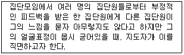
- “oo씨, 지금 느낌이 어떤가요?”
- “oo씨가 방금 아무렇지도 않다고 하는 말이 어쩐지 믿기지 않는군요.”
- “oo씨, 내가 만일 oo처럼 그런 지적을 받았다면 기분이 몹시 언짢겠는데요.”
- “oo씨는 아무렇지도 않다고 말하지만, 지금 얼굴이 아주 굳어있고 목소리가 떨리는군요. 내적으로 지금 어떤 불편한 감정이 있는 것 같은데, oo씨의 반응이 궁금하군요.”
(정답률: 알수없음)
16. 집단상담의 장점과 가장 거리가 먼 것은?
- 시간과 경제적인 측면에서 효율적이다.
- 타인과 상호교류를 할 수 있는 능력이 개발된다.
- 개인상담보다 심층적인 내면의 심리를 다루기에 더 효율적이다.
- 내담자들이 개인상담보다 더 쉽게 받아들이는 경향이 있다.
(정답률: 알수없음)
17. 다음 중 직업상담 영역이 아닌 것은?
- 직업일반상담
- 직업건강상담
- 취업상담
- 실존문제상담
(정답률: 알수없음)
18. 다음 면담을 읽고 인지적 명확성이 부족한 내담자의 유형과 상담자의 개입방법이 올바른 것은?
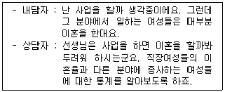
- 구체성의 결여 - 구체화시키기
- 파행적 의사소통 - 저항에 다시 초점 맞추기
- 강박적 사고 - RET 기법
- 원인과 결과 착오 - 논리적 분석
(정답률: 알수없음)
19. 직업상담 프로그램에서 가장 중요하고 기본적인 프로그램은?
- 직업세계 이해 프로그램
- 직업 복귀 프로그램
- 자신에 대한 탐구 프로그램
- 취업활동 효율성 증진 프로그램
(정답률: 알수없음)
20. 크릿츠(Crites)의 직업상담의 문제 유형 중 가능성이 많아서 흥미를 느끼는 직업들과 적성에 맞는 직업들 사이에서 결정을 내리지 못하는 것은?
- 다재다능형
- 우유부단형
- 불충족형
- 비현실형
(정답률: 알수없음)
21. 한국판 웩슬러 성인 지능검사의 특징이 아닌 것은?
- 언어성 검사와 동작성 검사로 이루어져 있다.
- 반응양식, 검사행동양식으로 개인의 독특한 심리특성도 파악할 수 있다.
- 신뢰도와 타당도가 높다.
- 숫자외우기, 추리력, 어휘문제 등의 소검사가 포함되어 있다.
(정답률: 알수없음)
22. 직무와 관련된 스트레스 요인 중 기계화 및 자동화시대에 살고 있는 오늘날 가장 위험한 스트레스 요인이 될 수 있는 것은?
- 지루함
- 역할갈등
- 생산압력
- 개인주의
(정답률: 알수없음)
23. 홀랜드(Holland) 직업성격이론의 6가지 성격유형에 해당되는 것은?
- 진취적 유형
- 직관적 유형
- 판단적 유형
- 외향적 유형
(정답률: 알수없음)
24. 스트레스 요인의 역할갈등 중 직업에서의 요구와 직업이외의 요구 간의 갈등에서 발생하는 것은?
- 개인내 - 역할갈등
- 개인간 - 역할갈등
- 송신자내 갈등
- 송신자간 갈등
(정답률: 알수없음)
25. 직무분석에 관한 설명 중 틀린 것은?
- PAQ는 작업자 중심 직무분석을 위한 대표적인 도구이다.
- 직무분석을 할 때 직무에 관한 정보를 얻는 가장 중요한 출처는 주제 관련 전문가(SME)이다.
- 고객도 직무분석을 위한 중요한 정보의 출처이다.
- 직무분석을 위해서는 직무평가가 이루어져야 한다.
(정답률: 알수없음)
26. 다음 중 Holland의 모델에 근거한 검사가 아닌 것은?
- 자가 흥미탐색 검사(SDS)
- 스트롱 - 캠벨 흥미검사(SVIB-SCII)
- 경력의사결정 검사(CDM)
- 경력개발검사(CDI)
(정답률: 알수없음)
27. 스트레스에 관한 설명으로 틀린 것은?
- 일반적응증후의 3단계는 경계단계, 저항단계, 회복단계이다.
- 스트레스 수준 또는 강도와 건강 및 생산성 간의 관계는 역 U자 관계이다.
- Seyle가 “일반적응증후군”이라는 개념을 제시하면서 최초의 학문적 연구가 시작되었다.
- 스트레스 정보의 전달은 자율신경계를 통한 과정과 뇌하수체를 경유하는 뇌분비계에 의한 전달과정으로 구분될 수 있다.
(정답률: 알수없음)
28. 다음은 타당도의 종류 중 무엇에 관한 설명인가?
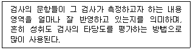
- 준거 타당도
- 내용타당도
- 예언타당도
- 구성타당도
(정답률: 알수없음)
29. 심리검사에서 사용되는 원 점수에 대한 설명으로 틀린 것은?
- 원 점수는 그 자체로는 거의 아무런 정보를 주지 못한다.
- 원 점수는 기준점이 없기 때문에 특정 점수의 크기를 표현하기 어렵다.
- 원 점수는 척도의 종류로 볼 때 등간척도에 불과할 뿐 사실상 서열척도가 아니다.
- 원 점수는 서로 다른 검사의 결과를 동등하게 비교할 수 없다.
(정답률: 알수없음)
30. 직무분석 방법 중 면접법의 면접지침으로 틀린 것은?
- 대답이 “예” 또는 “아니오”로 나오도록 한다.
- 유도질문을 하지 말아야 한다.
- 간단하고 쉽게 이해되는 언어를 사용한다.
- 면접을 안정되고 일관된 속도로 진행한다.
(정답률: 알수없음)
31. 홀랜드의 직업선호성 모형을 토대로 한 흥미검사에서는 직업흥미 유형을 6가지로 분류하고 있다. 이 중 관습적 유형의 특징과 적합한 직업의 연결이 올바른 것은?
- 억세고, 강인하고, 실제적임 : 농업, 기술자, 엔지니어, 군인
- 아이디어를 강조하고 추상적인 문제를 선호함 : 과학자, 의료서비스 분야
- 질서정연하거나 수를 다루는 작업을 선호함 : 회계직, 사무직, 행정직
- 창의적인 자기표현을 잘하며 구조화된 상황을 싫어함 : 예술가, 저술분야
(정답률: 알수없음)
32. 작업심리학을 연구할 때 사용하는 방법 중 현장실험 연구법을 옳게 설명한 것은?
- 인위적으로 만든 실험실에서 독립변수의 조작을 통해 행해지는 실험이다.
- 자연 상태에서 실시되므로 연구결과의 일반화 범위가 넓고 외적 타당도가 높다.
- 변수에 대한 조작이나 통제가 없기 때문에 인과성 추론을 거의 할 수가 없다.
- 가외변수의 영향을 엄격히 통제할 수 있고 피험자나 실험조건의 무선배치가 가능하다.
(정답률: 알수없음)
33. 다음 중 직업발달이론에 대한 설명으로 틀린 것은?
- 사회학습이론에서는 진로발달과정은 유전요인과 특별한 능력, 환경조건과 사건, 학습경험, 과제접근기술 등의 네 가지 요인과 관련된다고 본다.
- 진로선택에 대한 정신분석적 접근에서는 초기의 발달, 과정을 중시하며, 기본적인 욕구는 6세까지 형성된다고 가정하였다.
- 인지적 정보처리이론은 자기개념과 자기효능감의 개념과 만족과 안정성 등의 공통적인 성과와 흥미, 자기효능감, 능력, 욕구 등과 같은 관계를 설명하고 있다.
- 가치중심적 진로접근모형은 가치, 흥미, 환경 등과의 관계에서 가치중심의 모형의 명제를 제시하였다.
(정답률: 알수없음)
34. 직무분석 절차 중 작업자 지향적 절차는 직무를 성공적으로 수행하는데 요구되는 인적 속성들을 조사함으로써 직무를 이해하려고 한다. 다음 중 인적 속성에 해당되지 않는 것은?
- 태도
- 지식
- 기술
- 능력
(정답률: 알수없음)
35. 직무분석을 통해 해당 직무를 수행하는 작업자가 갖추어야 할 자격요건을 기록한 것은?
- 직무 기술서
- 직무 명세서
- 기능적 직무분석
- 직책 기술서
(정답률: 알수없음)
36. 조직 감축으로부터 살아남은 종업원들이 전형적으로 조직에 대해 반응하는 행동이 아닌 것은?
- 살아남은 자들도 종종 조직에 대한 신뢰감을 상실하곤 한다.
- 더 많은 일을 해야 하기 때문에 과로하며 종종 불이익도 감수하려고 한다.
- 일부 사람들은 다른 직무나 낮은 수준의 직무로 이동하는 것을 감수한다.
- 조직 감축에서 살아남은데 만족하며 조직 몰입을 더욱 많이 한다.
(정답률: 알수없음)
37. 다음 중 특성 - 요인 직업발달이론에 대한 설명으로 틀린 것은?
- 모든 사람에게는 자신에게 맞는 하나의 직업이 존재한다는 가정에서 출발한 이론이다.
- 특성 - 요인이론을 따르는 경우에는 진단 과정을 매우 중요시한다.
- 개인의 직업선택은 전 생애 과정을 통해 이루어지는 것이다.
- 심리검사이론과 개인차 심리학에 그 기초를 두고 있다.
(정답률: 알수없음)
38. 다음 중 생애 직업발달에 대한 설명으로 틀린 것은?
- 개인의 역할, 상황, 사건 간의 상호 작용에 대한 개념이다.
- 개인의 생활양식에 따라 다양하게 표현된다.
- 단일 시점의 특정한 사건을 해결하는 방안에 대한 개념이다.
- 자아발달을 강조하는 개념이다.
(정답률: 알수없음)
39. 경력개발프로그램에 대한 설명으로 틀린 것은?
- 대상자의 특성이 파악되어야 한다.
- 프로그램의 효과를 검증할 수 있어야 한다.
- 대상자 모두에게 동일한 내용을 실시하여야 한다.
- 프로그램 참여자의 응집력을 높일 수 있어야 한다.
(정답률: 알수없음)
40. 다음 중 동일한 검사를 동일한 피검자 집단에 일정 시간 간격을 두고 두 번 실시하여 얻은 두 검사 점수의 상관계수에 의하여 신뢰도를 측정하는 방법은?
- 동형검사 신뢰도
- 재검사 신뢰도
- 반분검사 신뢰도
- 문항 내적 일관성 신뢰도
(정답률: 알수없음)
2과목: 직업정보론(노동시장론 포함)
41. 국가기술자격종목 중 자격취득자가 반드시 주소지 관할 시·군·구청 또는 관련 단체에서 면허를 발급받아야 영업을 할 수 있는 것은?
- 자동차검사기능사
- 방송통신기능사
- 가스기능사
- 미용사
(정답률: 알수없음)
42. 공공취업알선 및 고용보험사업 등의 실적을 정기적으로 심층 분석하여 고용정책수립, 진행 및 관련 연구 활동의 기초자료로 활용되고 있는 것은?
- 고용보험통계연보
- HRD분석
- 고용동향분석
- 구인구직 및 취업동향
(정답률: 알수없음)
43. 한국직업사전(2003)에서 알 수 있는 직업관련 정보가 아닌 것은?
- 작업강도
- 직무개요
- 수행직무
- 임금수준
(정답률: 알수없음)
44. 정보체계를 예언적 체계, 가치체계, 결정준거 등으로 설명한 모형은?
- Kaldor&Zytowski의 모형
- Vroom의 모형
- Fletcher의 모형
- Gelatt의 모형
(정답률: 알수없음)
45. 다음 중 노동시장정보에 대한 설명으로 옳지 않은 것은?
- 노동시장정보를 수집·정리하고 분석·가공한 결과를 수요자에게 제공하는 일련의 과정 또는 체계이다.
- 직업선택의 효율성을 증대시키고 합리적인 인적자원 관리를 통해 불필요한 이직을 최소화한다.
- 직업, 산업, 임금, 근로시간, 노동시장 동향, 노동력의 인구학적 특성뿐만 아니라 구인·구직, 직업훈련, 노동 관련 제도 및 정책에 관한 정보를 포함한다.
- 우리나라의 경우 노동시장 정보자료의 수집·분석·가공은 통계청에서 주로 담당하고 있다.
(정답률: 알수없음)
46. 한국직업사전(2003)에 수록된 다음 직업은 무엇인가?
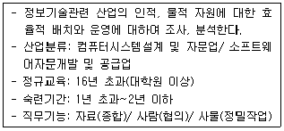
- 전사적 자원관리 시스템전문가
- 정보개발제공자
- 정보보호 컨설턴트
- 정보기술 컨설턴트
(정답률: 알수없음)
47. 다음은 고용정보의 용어 중 무엇에 관한 설명인가?
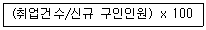
- 충족률
- 취업률
- 알선율
- 구인배율
(정답률: 알수없음)
48. 직업정보관리에 대한 설명으로 틀린 것은?
- 직업정보의 범위는 개인에 대한 정보, 직업에 대한 정보, 미래에 대한 정보로 구성되어 있다.
- 대표적인 직업정보원은 정부부처이며, 그 외에 정부투자출연기관, 단체 및 협회, 연구소, 기업과 개인 등이 있다.
- 직업정보가공 시에는 전문적인 지식이 없어도 이해할 수 있도록 가급적 평이한 언어로 제공되어야 하며 직무의 장·단점을 편견없이 제공하여야 한다.
- 개인의 정보는 보호되어야 하기 때문에 구직시에 연령, 학력 및 경력 등은 제공하지 않는 것이 좋다.
(정답률: 알수없음)
49. 한국고용정보원에서 발간한 한국직업전망(2007)에 관한 설명으로 틀린 것은?
- 본서는 향후 5년간 직업에 대한 전망을 제공하고 있다.
- 변리사 등 관련 자격이 있어야 입직이 가능한 직업도 수록되어 있다.
- 직업전망은 “감소, 현 상태 유지, 증가” 3가지 영역으로 나누었다.
- 직업정보와 관련된 협회, 공공기관, 학회 등의 전화번호와 홈페이지를 수록하였다.
(정답률: 알수없음)
50. 직업능력개발훈련 대상자의 선발기준으로 틀린 것은?
- 근로자직업능력개발법 규정에 의하여 수강제한 처분을 받을 사실이 있는 경우에는 그 처분 종료 후 6월이 지날 것.
- 훈련 중 수강을 포기한 사실이 있는 경우 포기한 날부터 4월이 지날 것
- 구직등록을 한 후 취업 시까지 우선선정직종훈련을 3회 이상 수강한 사실이 없을 것
- 정부로부터 훈련비 등의 지원을 받는 훈련과정의 수강 중에 있는 자가 아닐 것.
(정답률: 알수없음)
51. 다음 ( ) 안에 알맞은 것은?
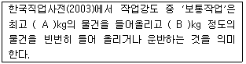
- A: 8, B: 4
- A: 20, B: 10
- A: 30, B: 15
- A: 40, B: 20
(정답률: 알수없음)
52. 신규실업자, 전직실업자, 여성가장실업자, 영세자영업자 등의 훈련 대상자 식비는 월 얼마인가?
- 5만원
- 6만원
- 7만원
- 8만원
(정답률: 알수없음)
53. 한국표준산업분류(2000)의 개요에 대한 설명으로 틀린 것은?
- 산업 활동의 범위에 영리적, 비영리적 활동 및 가사활동 모두 포함된다.
- 한국표준산업분류는 통계목적 이외에도 일반 행정 및 산업정책관련 법령에서 그 법령의 적용대상 산업영역을 한정하는 기준으로 준용되고 있다.
- 산업분류는 산출물·투입물의 특성, 생산 활동의 일반적인 결합 형태와 같은 기준에 의하여 분류된다.
- 사업체 단위는 공장, 광산, 상점, 사무소 등으로 산업 활동과 지리적 장소의 양면에서 가장 동질성이 있는 통계단위이다.
(정답률: 알수없음)
54. 다음은 한국표준직업분류의 직무능력수준 중 무엇에 관한 설명인가?
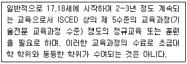
- 제 1직능 수준
- 제 2직능 수준
- 제 3직능 수준
- 제 4직능 수준
(정답률: 알수없음)
55. 고용정보의 주요 용어설명에 대한 설명으로 틀린 것은?
- ‘실업률’은 실업자가 경제활동인구에서 차지하는 비율을 의미한다.
- ‘입직률’은 전월 말 근로자 수로 나누어 계산한다.
- ‘유효구인자 수’는 구인신청인원 중 해당 월말 현재 알선 가능한 인원수의 합을 의미한다.
- ‘비경제활동인구’는 주간에 취업도 실업도 아닌 상태에 있는 사람을 의미한다.
(정답률: 알수없음)
56. 한국표준직업분류상 특정직종의 분류요령에 대한 설명으로 틀린 것은?
- 농업, 도·소매업, 음식숙박업 등의 관리자는 대분류‘0 ; 의회의원, 고위임직원 및 관리자’에 분류된다.
- 연구 및 개발업무 종사자는 대분류 ‘1 : 전문가’에서 그 전문분야에 따라 분류된다.
- 제품을 기계적으로 검사하는 것으로 이루어져 단순히 시각적 확인검사를 주로 하는 시험 및 검사원은 ‘2372 : 산업안전 및 품질검사 종사자’로 분류된다.
- 계속적인 관찰, 평가 및 지도에 의하여 직무훈련 업무를 주로 하는 지도직 종사자의 직업은 그들이 지도하는 특정 직종, 기능 또는 기계조작 종사자로 분류된다.
(정답률: 알수없음)
57. 직업훈련의 강화에 따른 효과로 가장 옳지 않은 것은?
- 인력부족 직종의 구인난을 완화시킬 수 있다.
- 재직근로자의 직무능력을 높일 수 있다.
- 산업구조의 변화에 대응할 수 있다.
- 마찰적인 실업을 줄일 수 있다.
(정답률: 알수없음)
58. 한국직업사전(2003)의 부가 직업정보에 관한 설명으로 틀린 것은?
- ‘산업분류’는 해당 직업을 조사한 산업을 나타내는 것으로 한국표준산업분류의 소분류산업을 기준으로 했다.
- ‘정규교육’은 독학, 검정고시 등을 통해 정규교육 과정을 이수하였다고 판단되는 기간도 포함된다.
- ‘숙련기간’은 해당직무를 평균적인 수준 이상으로 수행하기 위한 향상훈련도 포함된다.
- ‘직무기능’은 해당 직업 종사자가 직무를 수행하는 과정에서 자료, 사람, 사물과 맺는 관련된 특성을 나타낸다.
(정답률: 알수없음)
59. 한국표준산업분류(2000) 통계단위의 산업결정에 관한 설명으로 틀린 것은?
- 부차적 산업 활동은 주된 산업 활동 이외의 재화생산 및 서비스 제공 활동을 말한다.
- 주된 산업 활동과 부차적 산업 활동은 보조 활동의 지원 없이 수행될 수 있다.
- 생산단위의 산업 활동은 그 생산단위가 수행하는 주된 산업 활동의 종류에 따라 결정된다.
- 모 생산단위에서 사용되는 재화나 서비스를 보조적으로 생산하더라도 그 생산되는 재화나 서비스의 대부분을 다른 산업체에 판매하는 경우 별개의 사업체로 간주하여 그 자체활동에 따라 분류하여야 한다.
(정답률: 알수없음)
60. 다음 중 공공직업정보의 특성에 해당되는 것은?
- 필요한 시기에 최대한 활용되도록 한시적으로 신속하게 생산되어 운영된다.
- 특정 분야 및 대상에 국한되지 않고 전체산업 및 업종에 걸친 직종을 대상으로 한다.
- 정보 생산자의 임의적 기준에 따라 관심이나 흥미를 유도할 수 있도록 해당 직업을 분류한다.
- 특정 직업에 대해 구체적이고 상세한 정보를 제공하기 위해서는 조사 분석 및 제공에 상당한 시간 및 비용이 소요되므로 해당 직업정보는 유료로 제공한다.
(정답률: 알수없음)
61. 노동공급의 소득효과에 관한 설명으로 맞는 것은?
- 임금 이외 소득의 증가로 노동공급량을 증가시키는 것이다.
- 임금소득의 증가로 여가를 증가시키고 노동공급량을 감소시키는 것이다.
- 임금소득의 증가로 노동공급량을 증가시키는 것이다.
- 노동의 소득효과가 대체효과보다 크면 노동공급 곡선이 우상향하는 형태로 나타난다.
(정답률: 알수없음)
62. 노동의 공급곡선에 대한 설명 중 틀린 것은?
- 일정 임금수준 이상이 될 때 노동의 공급곡선은 후방굴절부분을 가진다.
- 임금과 노동시간 사이에 음(-)의 관계가 존재할 경우 임금률의 변화 시 소득효과가 대체효과보다 작다.
- 임금과 노동시간과의 관계이다.
- 노동공급의 증가율이 임금상승률보다 높다면 노동공급은 탄력적이다.
(정답률: 알수없음)
63. 임금체계의 공평성(equity)에 대한 설명으로 맞는 것은?
- 최저생활을 보장해 주는 임금원칙을 말한다.
- 근로자의 공헌도에 비례하여 임금을 지급한다.
- 1등이 다 가져가는 승자일체 취득의 원칙을 말한다.
- 연령, 근속년수가 같으면 동일한 임금을 지급한다.
(정답률: 알수없음)
64. 조합원 자격이 있는 노동자만을 채용하고 일단 고용된 노동자라도 조합원 자격을 상실하면 종업원이 될 수 없는 숍 제도는?
- 오픈 숍
- 유니언숍
- 에이젼시 숍
- 클로즈드 숍
(정답률: 알수없음)
65. 만일 여가가 열등재라면 개인의 노동공급곡선의 형태는?
- 후방굴절한다.
- 완전비탄력적이다.
- 완전탄력적이다.
- 우상향한다.
(정답률: 알수없음)
66. 보상요구임금(reservation wage)에 관한 설명으로 틀린 것은?
- 노동을 시장에 공급하기 위해 노동자가 요구하는 최소한의 주관적 요구 임금수준이다.
- 의중임금 또는 눈높이 임금으로 불리운다.
- 시장에 참가하여 효용극대화를 달성하는 근로자의 의중임금은 실제 임금과 일치한다.
- 전업주부의 의중임금은 실제임금보다 낮다.
(정답률: 알수없음)
67. 노동시장에서 존재하는 임금격차에 대한 설명으로 틀린 것은?
- 노동생산성의 차이, 근로자의 공헌도 차이 등에 의해서 임금격차가 발생하며, 직종 간 노동이동이 자유롭지 못할수록 직종별 임금격차는 크게 발생할 것이다.
- 최근 들어 성별·직종별 임금격차는 점점 축소되는 경향을 보이고 있으며, 대학 졸업자들이 양산됨에 따라 학력별 임금격차 역시 축소되는 경향을 보일 것이다.
- 노동시장에서 노동공급이 노동수요를 초과하는 정도가 클수록 임금격차는 확대될 것이며, 반대일 경우에는 임금격차가 축소될 것이다.
- 요즘과 같은 대졸자 취업난 시대에도 많은 기업들이 대졸자에게 고임금을 지급하는 이유는 임금격차를 설명하는 효율임금이론과 관련된 것으로서 기업의 이윤극대화 목표와는 무관하다.
(정답률: 알수없음)
68. 다음은 힉스의 교섭모형과 기대파업기간에 대한 그림이다. 이에 대한 설명으로 틀린 것은?
- 임금률 A점은 노동조합이 없거나 노동조합이 파업을 하기 이전 사용자들이 지불하려고 하는 임금수준이다.
- B점에서 우하향 곡선은 노동조합의 저항곡선이다.
- 만약 노동조합이 OWo보다 더 높은 임금을 요구하면 사용자는 쉽게 수락하겠지만, 그때는 노동조합 내부에서 교섭대표자들과 일반조합원간의 마찰이 불가피하다고 하였다.
- 힉스의 모형은 단체교섭과정에서의 불확실성을 지나치게 경시하였다는 비판을 받게 되었다.
(정답률: 알수없음)
69. 다음 중 비경제활동인구가 아닌 사람은?
- 전업주부
- 구직활동은 하고 있으나 직업을 구할 수 없는 자
- 일을 할 수 없는 노인과 장애인
- 자발적으로 자선단체나 종교단체에 관여한 자
(정답률: 알수없음)
70. 마찰적 실업을 해소하기 위한 정책이 아닌 것은?
- 구인· 구직에 대한 전국적인 전산망 연결
- 직업안내와 직업상담 등 직업알선기관에 의한 효과적인 알선
- 고용실태 및 전망에 관한 자료제공
- 노동자의 전직과 관련된 재훈련을 실시하고 지역 간 이동을 촉진시키는 지역 이주금 보조
(정답률: 알수없음)
71. 힉스 - 마샬 법칙에 관한 설명으로 틀린 것은?
- 최종생산물에 대한 수요가 탄력적일수록, 노동에 대한 수요는 탄력적이 된다.
- 다른 요소와의 대체가능성이 높을수록 노동에 대한 탄력성은 작게 된다.
- 다른 생산요소의 공급탄력성이 작을수록 노동을 다른 생산요소(자본)로 대체하기가 어렵게 되기 때문에 노동수요의 탄력성은 작아진다.
- 총생산비에서 차지하는 노동비용의 비중이 높을수록 노동에 대한 수요탄력성은 크게 된다.
(정답률: 알수없음)
72. 다음 ( )안에 알맞은 것은?
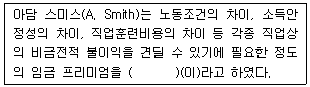
- 직종별 임금격차
- 균등화 임금격차
- 생산성임금
- 해도닉임금
(정답률: 알수없음)
73. 기업별 노동조합에 대한 설명으로 맞는 것은 모두 몇 개?
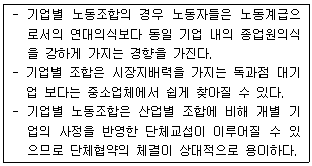
- 0개
- 1개
- 2개
- 3개
(정답률: 알수없음)
74. 내국인들이 취업하기를 기피하는 3D직종에 대한 외국 인력의 수입 또는 불법 이민이 국내 내국인 노동시장에 미치는 영향으로 맞는 것은?
- 임금과 고용이 높아진다.
- 임금과 고용이 낮아진다.
- 임금은 높아지고 고용은 낮아진다.
- 임금과 고용의 변화가 없다.
(정답률: 알수없음)
75. 이중노동시장에서 2차노동시장의 특징에 해당되는 것은?
- 기업 내부의 승진가능성이 높다.
- 종사자의 결근율이 낮다.
- 종사자의 고용기간이 짧다.
- 자신의 인적자본을 높이려는 열의가 강하다.
(정답률: 알수없음)
76. 다음은 노사관계의 유형 중 무엇에 관한 설명인가?
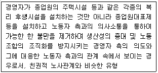
- 억압적 노사관계
- 가부장적 노사관계
- 노사협동적 노사관계
- 산업민주적 노사관계
(정답률: 알수없음)
77. 실업 중 수요부족 실업에 해당하는 것은?
- 마찰적 실업
- 경기적 실업
- 구조적 실업
- 계절적 실업
(정답률: 알수없음)
78. 처음 7명의 노동자의 평균생산량은 20단위였다. 노동자를 추가로 한 사람 더 고용함으로써 평균생산량은 18단위로 감소하였다. 이때 추가 고용된 노동자의 한계생산량은?
- 4단위
- 5단위
- 6단위
- 7단위
(정답률: 알수없음)
79. 생산요소인 노동의 수요곡선을 이동시키는 요인이 아닌 것은?
- 임금의 변화
- 노동을 투입하여 생산한 생산물의 가격변화
- 노동생산성의 변화
- 자본의 생산성 변화
(정답률: 알수없음)
80. 노동조합 조직률 변동의 결정요인에 대한 설명으로 틀린 것은?
- 근로조건 열악 등에서 오는 불만과 분노의 양이 클수록 노조의 집단적 발언효과로 인하여 노조가입의 예상순이익이 증가할 수 있다.
- 노조의 정치활동으로 근로자의 간접임금이 높아질 가능성이 높아지면 예상순이익이 증가하여 노조가입에 대한 수요가 증가할 것이다.
- 여성의 경제적 지위 향상에 대한 노조의 관심과 노력이 있으면 전체 노동력에서 여성고용의 비중이 증가함에 따라 노조가입은 증가한다.
- 산업구조가 서비스업 중심으로 바뀜에 따라 화이트 칼라의 구성이 높아지면 노조가입은 증가한다.
(정답률: 알수없음)
3과목: 노동관계법규
81. 남녀고용평등법령상 적극적고용개선위원회에 관한 설명으로 틀린 것은?
- 위원장은 노동부장관이 된다.
- 위원회는 위원장을 포함하여 10인 이내의 위원으로 구성한다.
- 위원의 임기는 2년으로 한다.
- 여성근로자 고용기준에 관한 사항 등을 심의한다.
(정답률: 알수없음)
82. 고용정책기본법령상 국가 및 지방자치단체가 근로자의 원활한 이동 및 고용을 촉진하기 위하여 설치·운영하는 고용촉진시설이 아닌 것은?
- 이동근로자를 위한 숙박· 급식시설
- 근로자를 위한 교양· 체육 또는 오락시설
- 여성근로자의 고용촉진을 위한 시설
- 근로자의 취직· 고용문제 등에 대한 상담을 위한 유료직업소개 시설
(정답률: 알수없음)
83. 남녀고용평등법에 관한 설명으로 틀린 것은?
- 근로 여성에 대한 모성보호는 차별로 보지 않는다.
- 남녀고용평등법은 상시 10인 이상의 근로자를 사용하는 사업장에 적용한다.
- 지방노동행정기관에 고용평등위원회를 둔다.
- 고충처리기관을 설치하여야 할 사업주는 상시 30인 이상의 근로자를 사용하는 사업의 사업주이다.
(정답률: 알수없음)
84. 고령자고용촉진법령상 정년에 대한 설명으로 틀린 것은?
- 사업주는 정년에 도달한 자가 그 사업장에 다시 취업하기를 희망할 때는 그 직무수행능력에 적합한 직종에 재고용하도록 노력하여야 한다.
- 사업주가 근로자의 정년을 정하는 경우에는 그 정년이 60세 이상이 되도록 노력하여야 한다.
- 사업주는 고령자인 정년 퇴직자를 재고용함에 있어 임금의 결정을 종전과 달리 할 수 없다.
- 상시 300인 이상의 근로자를 사용하는 사업주는 매년 정년제도의 운영현황을 노동부 장관에게 제출하여야 한다.
(정답률: 알수없음)
85. 근로기준법의 총칙 규정에 관한 설명으로 틀린 것은?
- 누구든지 법률에 따르지 아니하고는 영리로 다른 사람의 취업에 개입하거나 중간인으로서 이익을 취득하지 못한다.
- 사용자는 국적 · 신앙 또는 사회적 신분을 이유로 근로조건에 대한 차별적 처우를 하지 못한다.
- 사용자는 사고의 발생이나 그 밖의 어떠한 이유로도 근로자에게 폭행을 하지 못한다.
- 사용자는 근로자가 근로시간 중에 공민권의 행사를 위하여 필요한 시간을 청구하면 거부할 수 있다.
(정답률: 알수없음)
86. 직업안정법령상 근로자의 모집에 대한 설명 중 옳은 것은?
- 모집질서의 확립을 위하여 필요하다고 인정하여 모집 방법 등의 개선을 권고할 때는 당사자에게 구두로 할 수 있다.
- 건전한 모집질서의 확립을 위하여 필요하다고 인정되어 모집방법 등의 개선을 권고할 때는 지방고용심의회의 심의를 거쳐야 한다.
- 근로자를 모집하고자 하는 자와 그 모집에 종사하는 자는 명목의 여하를 불문하고 응모자로부터 그 모집과 관련하여 금품을 받아서는 아니된다.
- 국외에 취업할 근로자를 모집하고자 하는 자는 모집 마감일 15일 이전까지 직업안정기관의 장에게 신고하여야 한다.
(정답률: 알수없음)
87. 직업안정법령상 직업소개의 절차로 맞는 것은?
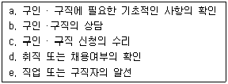
- a → b→ c→ e→ d
- a → c→ b→ e→ d
- a → d→ b→ c→ e
- a → b→ d→ c→ e
(정답률: 알수없음)
88. 근로기준법상 근로자 개념에 관한 설명으로 맞는 것은?
- 근로기준법과 노동조합 및 노동관계조정법상의 근로자의 개념은 동일하다.
- 근로기준법상 사업에 근로를 제공하기 위하여 체결한 고용계약이 불법이면 사실상 사업장에 근로를 제공하더라도 근로자가 아니다.
- 실업자는 “사업 또는 사업장에 근로를 제공하는 자”가 아니므로 근로기준법상의 근로자에 해당하지 않는다.
- 사무직, 관리직, 위탁실습생, 수련의는 근로기준법상 근로자가 아니다.
(정답률: 알수없음)
89. 근로기준법상 임금의 지급방법에 관한 설명으로 틀린 것은?
- 임금은 근로자 본인에게 지급해야 하나, 단체협약으로 예외를 둘 수 있다.
- 사용자는 단체협약에 따라 노동조합비를 공제하여 임금을 지급할 수 있다.
- 임금은 강제 통화력이 있는 통화로 지급하는 것이 원칙이나, 법령 또는 단체협약에 특별한 규정이 있는 경우에는 통화 이외의 것으로 지급할 수 있다.
- 매월 1회 이상 일정한 기일을 정하여 지급하여야 한다.
(정답률: 알수없음)
90. 고용보험법상 용어에 관한 설명으로 틀린 것은?
- “임금”은 근로기준법에 의한 임금 외에 예외적으로 노동부장관이 정하는 금품도 포함된다.
- “일용근로자”라 함은 6월 미만의 기간 동안 고용되는 자를 말한다.
- “이직”은 피보험자와 사업주 사이의 고용관계가 끝나게 되는 것을 말한다.
- “실업”은 피보험자가 이직하여 근로의 의사 및 능력을 가지고 있음에도 불구하고 취업하지 못한 상태에 있는 것을 말한다.
(정답률: 알수없음)
91. 근로자직업능력개발법상 직업능력개발훈련이 중시되어야 하는 자에 해당하지 않는 것은?
- 고령자 · 장애인
- 「5 ·18 민주유공자 예우에 관한 법률」에 의한 5 · 18 민주유공자 및 그 유족 또는 가족
- 「중소기업법」에 의한 중소기업 근로자
- 기간의 정함이 없는 근로자
(정답률: 알수없음)
92. 근로자직업능력개발법상 직업능력개발훈련시설의 지정을 받고자 하는 자의 결격사유에 해당하지 않는 것은?
- 금치산자
- 파산선고를 받은 자로서 복권되지 아니한 자
- 동법 규정에 따라 지정 직업훈련 시설의 지정이 취소된 날부터 1년이 경과되지 아니한 자.
- 「평생교육법」규정에 따라 평생교육시설의 설치인가 취소 처분을 받고 2년이 경과된 자
(정답률: 알수없음)
93. 우리 헌법상 근로의 권리에 관한 내용으로 틀린 것은?
- 국가의 고용증진의무
- 근로조건기준의 법정주의
- 여자와 연소자의 근로의 특별보호
- 국가유공자 등에 대한 근로기회의 평등보장
(정답률: 알수없음)
94. 고용보험법의 목적에 대한 설명으로 틀린 것은?
- 근로자의 실업의 예방 및 직업능력의 개발과 향상을 도모한다.
- 모성보호급여를 지급함으로써 여성의 고용촉진과 사업장에서 남녀고용평등을 실현한다.
- 취업이 어려운 자의 고용의 촉진을 도모하고 국가의 직업지도와 직업 소개 기능을 강화한다.
- 근로자가 실업한 경우에 생활에 필요한 급여를 실시하여 근로자의 생활안정과 구직활동을 촉진한다.
(정답률: 알수없음)
95. 고용보험법상 고용보험법의 적용대상이 될 수 있는 근로자는?
- 1월간의 소정근로시간이 60시간 미만인 자
- 「사립학교 교직원 연금법」의 적용을 받는 자
- 「별정우체국」에 의한 별정우체국 직원
- 생업을 목적으로 근로를 제공하는 자 중 3월 이상 계속하여 근로를 제공하는 자
(정답률: 알수없음)
96. 직업안정법령상 허위구인광고 및 손해배상책임의 보장에 대한 설명으로 틀린 것은?
- 구인을 가장하여 물품판매·수강생 모집·직업소개·부업알선·자금모금 등을 행하는 광고는 허위구인광고에 해당한다.
- 국내유료직업소개사업자의 경우에는 손해배상책임의 보장을 위해서 사업소별로 1억원을 금융기관에 예치하거나 보증보험에 가입하여야 한다.
- 유료직업소개사업자가 예치금을 금융기관에 예치하는 경우에는 등록기관의 장과 공동명의로 하여야 한다.
- 허위구인광고를 하거나 허위의 구인조건을 제시한 자는 5년 이하의 징역 또는 2천만 원 이하의 벌금에 처한다.
(정답률: 알수없음)
97. 고령자고용촉진법령에 대한 설명으로 맞는 것은?
- 동법의 근로자는 노동조합 및 노동관계조정법상의 근로자를 말한다.
- 제조업은 그 사업장의 상시 근로자수의 100분의 3을 고령자로 고용하여야 한다.
- 동법에서 고령자는 50세 이상인 자로 한다.
- 상시 300인 이상의 근로자를 사용하는 사업주는 기준고용률 이상의 고령자를 고용하도록 노력하여야 한다.
(정답률: 알수없음)
98. 고용보험법령상 육아휴직급여와 산전후휴가급여에 대한 설명으로 틀린 것은?
- 육아휴직급여를 받으려면 남녀고용평등법에 따른 육아휴직을 30일 이상 부여받은 피보험자이어야 한다.
- 특별한 사유가 없는 한 육아휴직 개시일 이후 1월부터 종료일 이후 12월 이내에 육아휴직급여를 신청해야 한다.
- 산전후휴가급여는 상한액과 하한액을 두고 있고 육아휴직 급여는 사업주로부터 별도의 급여를 받지 않은 경우에는 월 50만원을 고용보험에서 지급한다.
- 육아휴직 또는 산전후휴가 개시일 이전에 피보험단위기간이 통산하여 180일 이상이어야 급여를 받을 수 있다.
(정답률: 알수없음)
99. 다음 중 직업능력개발훈련비용의 지원대상훈련이 아닌 것은?
- 피보험자가 아닌 자로서 당해 사업주에게 고용된 자를 대상으로 실시하는 직업능력개발훈련
- 당해 사업에 서 채용하고자 하는 자를 대상으로 실시하는 직업능력개발훈련.
- 직업안정기관에 구직 등록된 자를 대상으로 실시하는 직업능력개발훈련.
- 당해 사업에 고용된 피보험자에게 연월차유급휴가를 주어 실시하는 직업능력개발훈련.
(정답률: 알수없음)
100. 고용정책기본법령상 고용조정지원 및 고용안정대책에 관한 설명으로 틀린 것은?
- 정부는 사업의 전환이나 사업의 축소ㆍ정지ㆍ폐지로 인하여 고용량이 현저히 감소할 우려가 있는 업종에는 필요한 지원조치를 할 수 있다.
- 상시 근로자수 300인 미만을 사용하는 사업주가 생산설비의 자동화 등으로 1월 이내의 기간에 해당하는 근로자의 수가 30인 이상 고용량의 변동이 발생된 경우 직업안정기관에 신고해야 한다.
- 동법의 “무급휴직자”라 함은 6월 이상의 기간을 정하여 무급으로 휴직하는 자를 말한다.
- 노동부장관은 실업대책사업의 일부를 산업재해보상보험법에 의한 한국 산업인력공단에 위탁하여 실시하게 할 수 있다.
(정답률: 알수없음)